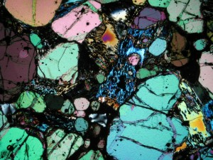
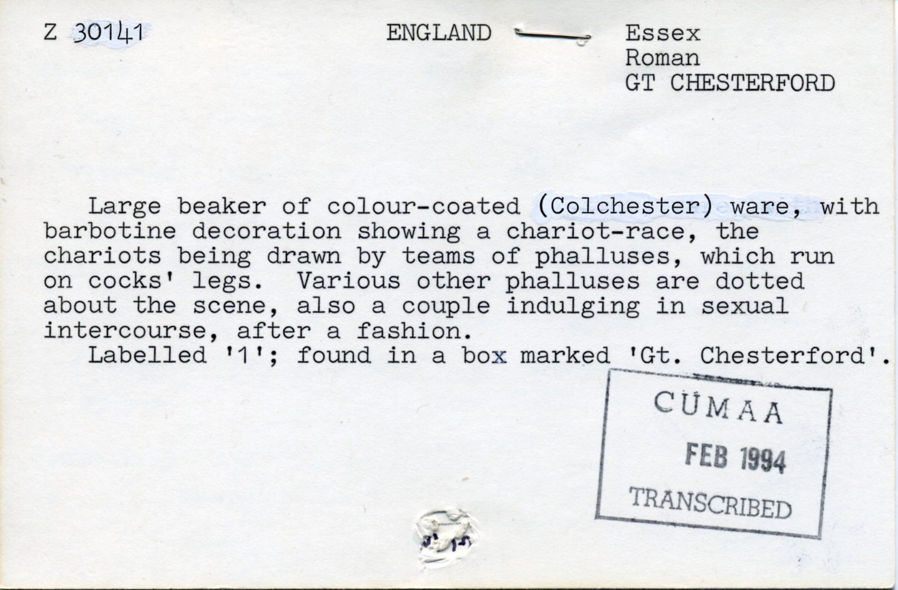
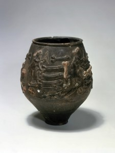

Imagine you could take a photograph of your life. Not of a moment in your life, but a photograph that captured your whole life, beginning to end. And imagine that same photograph could also capture your parents’ lives, and their parents’, and in fact everyone’s life who had ever lived. Now let’s imagine that photograph could do more: that it could record a time before human beings, when animals were not like those that we see today, when dinosaurs were youngsters. Ridiculous, you say, no photograph could be so large or could move across time in this way. But rocks are and rocks do. Granted, you cannot see the particular outfit you were wearing on a particular day simply by peering into a rock, but you can learn much about what the world was like at a given time. We know that fossils lock-in life forms that can introduce us to creatures no longer alive; but we don’t need the animal to be present to learn about life on Earth. Iron oxide within a rock may tell us about the changing presence of oxygen in the atmosphere, which in turn allows us to establish the likely kinds of life that the environment supported at the time. Some minerals inform us about temperature: the presence of salt can point to a warmer era when the seas evaporated faster than at other times; till can indicate a period of glaciation. Pollen spores trapped in a rock offer evidence of plant life that allow us to colour the planet with vegetation and picture the kind of creatures that lived off it. In other words, there are clues in the make-up of any rock that indicate what our lives might have been like at the time, if indeed we were living at all. Clues about the air, the seas, the climate, animals, vegetation, food: clues about our ever changing planet, clues about time. Of course decoding these clues takes skill and experience, and fortunately the Sedgwick Museum in Cambridge is a hive of such skill and experience. But there is another element that the museum relies upon which you don’t need to be an expert to possess: and that’s curiosity. For two weeks in March and April this spring, I shall be drawing upon mine when I will be Poet in Residence in the Sedgwick Museum. If you at all share my curiosity towards time and the changeable Earth then do come along with me to the museum this spring to peek into the world locked inside of rocks. You might catch me attempting to put curiosity into words. You might catch yourself putting it into words of your own.

Matthew’s preliminary visit to the Sedgwick Museum a couple of weeks ago was a packed day which squeezed in a whistle-stop tour around the Museum and the Department of Earth Sciences from top to bottom, attic to basement, mass spectrometer to mammoth teeth. This project is all about revealing hidden things and looking at our collections in new ways, and one thing a geologist never loses fascination for is the transformation that rocks undergo when they are viewed through a microscope. So we took Matthew to visit Rob in the Sectioning Room, which is not as grim as it sounds. Rob is a craftsman – his job is to carefully turn samples of rock into analytical thin sections mounted on a glass slides. The rock slices are incredibly thin – he painstakingly grinds them down until they are just 30 microns thick, like a human hair – so that even the densest, blackest volcanic rocks become transparent and can be viewed through a petrological microscope to reveal their mineral composition and texture.
Petrological microscopes are specially designed for looking at rocks, and as well as viewing your thin section in either normal or filtered (also known as Plane Polarised) white light, you can also flip a switch called the Analyser. This inserts a second polariser which filters the light that has already been refracted by passing through the thin section before it reaches your eye. The result? You see a rainbow of interference colours, your black rock is suddenly transformed into glorious back-lit stained glass. Different minerals have different colours in cross polarised light because they bend the light coming through them by different amounts. For a petrologist this is important as the colour variations enable telling one mineral from another – which is very hard to do just from looking at a fine-grained black rock.
The development of this microscopy technique in the late 19th/ early 20th century quietly revolutionised the study of igneous and metamorphic rocks. As well as revealing what minerals a rock contained, thin sections allowed geologists to see for the first time how the crystals in a rock fitted together. This in turn gave them clues about which minerals crystallised first, leading to advances in our understanding of the complex processes taking place in magma chambers deep inside the Earth that lead to their formation.
We’re looking forward to introducing Matthew to our collections over the coming weeks, and seeing them through his eyes and his words.
The rock in the picture is a thin section made from one of the volcanic rock samples that Charles Darwin collected from Sant Iago, one of the Galapagos Islands, viewed through cross polarised light.
Annette Shelford, Museum Education Officer

Jo Shapcott’s BBC Four radio play is now available to listen and download from the link below.
Erebus is the story of Sir John Franklin’s lost voyage to the Northwest Passage, told through the ghostly voices of the Ice Master, William Braine and Lady Jane Franklin. The music is composed by Jon Nicholls.
If you would like to find out more about Franklin’s story, visit the Polar Museum’s library catalogue: http://www.spri.cam.ac.uk/library/pictures/catalogue/bfse1857-59/

Here, the pot is reproduced by the permission of the University of Cambridge Museum of Archaeology & Anthropology [Z 30141].

You can listen to the story behind this object and card from the Museum of Archaeology and Anthopology’s collections manager Imogen by clicking the link below.

In the world of Persian Astrolabes
the points of the curved spikes
mark the exact positions of the brightest stars
with their names labeled at the base of each spike:
Sirius, Canopus, Arcturus, Capella
Horary Quadrants – the pocket size 17thc. ivory altitude dials
tell the time from the height of the sun to the earth
or the hour of the night from the stars
and thereby the length of the day and the night
in the Ancient Chinese tradition of honoring history over observation
they gave the titles ‘imperial concubine’ and ‘celestial emperor’
to the constellations on their sky globes.
Today murky uncertainties linger between science and desire
and still mankind embroiders the tree of life with theories
while toying with pleasures that both mock and fulfill.
Is the Grand Orrery a mere fanciful heavenly charm
for it is unknown to female nightingales
who migrate in darkness
waiting for the males to sing
and call them down out of the sky.
Daphne Astor